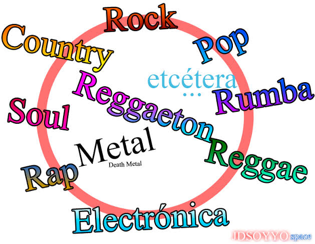

Toca la imagen para regresar al inicio
Un género musical es una forma de agrupar canciones que comparten ritmo, instrumentos y estilo.
Música pegajosa y fácil de recordar, hecha para gustarle a mucha gente. Es el género que más suena en la radio.
Nació en los años 50 en Estados Unidos. Usa guitarra eléctrica, bajo y batería, y tiene un sonido fuerte y lleno de energía.
Surgió en Puerto Rico y Panamá. Tiene un ritmo bailable llamado "dembow" y hoy es de los géneros más escuchados del mundo.
Incluye mariachi, banda, norteño y corridos. Es parte de la identidad de México, sobre todo de Jalisco, cuna del mariachi.
Se crea con computadoras y sintetizadores. Es muy común en fiestas y festivales.